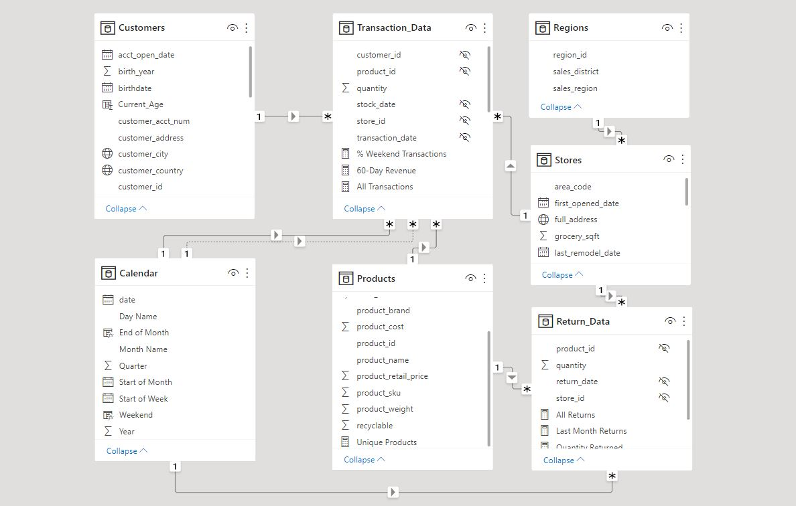

Power BI Project 2: Maven Market
This project represents an analysis for Maven Market, a company that sells groceries. The report contains a Topline Performance to show the behaviour of transactions, profits, and returns over time. In addition, it shows a detailed analysis on the products, a territorial analysis to check where the products are predominantly sold and also revenue trends and target compliance.
We first imported 7 CSV databases to create the tables in the data model:
- Customers
- Transaction_Data
- Regions
- Stores
- Products
- Calendar
- Return_Data
After that, we developed the following data model by creating relationships between the tables:
We also created the following DAX measures and calculated columns to add more layers of analysis to our report. These are some of the measures created:
- Time: Weekend, End of month, Current age, Years since Remodel
- Logical/Conditional: Priority, Price tier
- Text: Short country, House number
- Math/Stats: Quantity sold, Quantity returned, Return rate, % Weekend transactions, Total profit, Profit margin, Revenue target
- Count: Total transactions, Total returns, Unique products
- Calculate: Weekend transactions, All transactions, Last month transactions, Last month revenue, Last month profit, Last month returns
- Iterators: Total Revenue, Total cost
- Time intelligence: Year to date revenue, 60-day revenue